A purpose-built, Smart Contract DAO-governed funding mechanism for projects advancing Cardano's 2030 Vision KPIs.
The Cardano Builder DAO's mission is to grow on-chain activity and adoption of Cardano in alignment with Cardano's 2030 Vision. This emphasis on tangible metrics and established projects distinguishes us from other funding structures.
Through semi-annual budget proposals, the DAO distributes resources to projects that can demonstrate KPI growth that aligns with Cardano's objectives.
By openly sharing Key Performance Indicators (KPIs), funded projects remain accountable to both the DAO and the broader Cardano community.
Governance decisions, including funding requests to treasury withdrawals, go through transparent voting processes enforced by on-chain smart contracts, ensuring that no single group can unilaterally control funds.
All funded projects must commit to tracking one standardized Cardano 2030 KPI. These include TVL, MAU, and transactions. In addition, projects can elect to track additional KPIs that are relevant to their specific project (downloads, etc.).
Provide funding for development, and growth for proven projects building on Cardano. The goal of all funded projects is to become profitable and self-sustaining, so future projects can achieve the same through Cardano Builder DAO.
Cultivate a community where expertise, accountability, and feedback flow among Cardano builders. Leverage each other's success to create a growth flywheel for Cardano.
Each member (project) has one vote, ensuring that no single group has an outsized impact on deciding which projects receive funding.
Proposals for funding undergo a rigorous review process and are directly compared with each other, then voted on by the builders themselves. Only the projects that demonstrate the strongest potential for success and impact will receive funding.
Every 6 months, on-chain treasury withdrawal proposals are submitted as roll-ups of the approved funding requests. 51% of all DAO members must approve before smart contracts release the funds. To date, CB DAO treasuries have distributed over 11M ADA directly on-chain.
We are set to support and sustain Cardano's evolving dApp ecosystem. Here's a brief look at our yearly operating cycle:
This rhythm ensures that critical governance actions—from membership approvals to distributing funds—are conducted in a predictable, transparent manner.
If you're Building on Cardano, the CB DAO invites you to:
By working together under a clear, rational, and forward-thinking framework, the CB DAO aims to grow on-chain activity and adoption of Cardano.